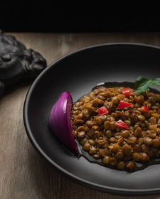
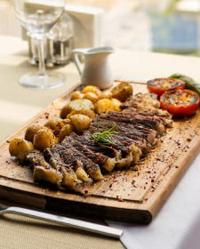
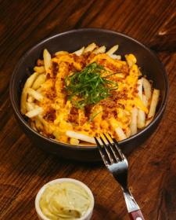

Descrube nuestro menú
Deleitate por el sabor de nuestra cocina.
Ingredientes
de calidad
Descrubre nuestro menu
Recetas tradicionales
Ingredientes
Frescos y de la mejor calidad.
Recetas
Conservadas de generacion en generacion.

Asado Criollo Tradicional
120 min

Empanadas de la Abuela
45 min

Guiso de Lentejas
60 min

Chuletón
180 min

Tallarines al Huevo
40 min

Flan con Dulce de Leche
30 min

Milanesa con Papas Fritas
25 min

Pan de Campo Casero
90 min